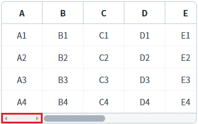
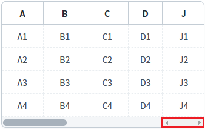
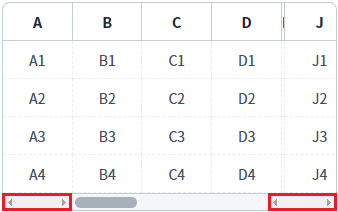
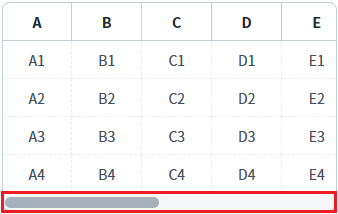
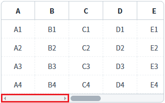
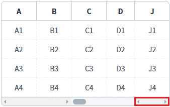
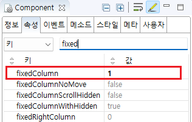
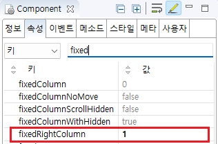
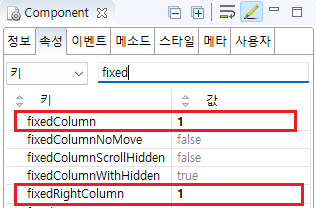

GridView의 속성과 메소드를 사용하여, 열을 고정하는 예제입니다. 이 예제에서 사용한 속성과 메소드별 기능은 다음과 같습니다.
fixedColumn: (속성) 좌측 열 고정
fixedRightColumn: (속성) 우측 열 고정
setFixedColumn: (메소드) 좌측 열 고정
setFixedRightColumn: (메소드) 우측 열 고정
좌측 열 고정 설정하기
우측 열 고정 설정하기
좌측과 우측 열 고정 설정하기
메소드를 사용하여 열 고정 설정하기
예제 영역 '좌측 열 고정 설정하기'에 구성된 GridView에서 테스트합니다.1
STEP 1: 실행 결과를 확인합니다.
좌측에서 1번째 열이 고정되었습니다.
Image 1.브라우저(Chrome) 실행 예시

예제 영역 '우측 열 고정 설정하기'에 구성된 GridView에서 테스트합니다.1
STEP 1: 실행 결과를 확인합니다.
우측에서 1번째 열이 고정되었습니다.
Image 2.브라우저(Chrome) 실행 예시

예제 영역 '좌측과 우측 열 고정 설정하기'에 구성된 GridView에서 테스트합니다.1
STEP 1: 실행 결과를 확인합니다.
좌측에서 1번째 열과 우측에서 1번째 열이 고정되었습니다.
Image 3.브라우저(Chrome) 실행 예시

예제 영역 '메소드를 사용하여 열 고정 설정하기'에 구성된 GridView에서 테스트합니다.1
STEP 1: 초기 상태를 확인합니다.
열 고정이 설정되지 않았습니다.
Image 4.브라우저(Chrome) 실행 예시

2
STEP 2: 좌측 열을 고정합니다.
'좌측 2번째 열까지 고정하기' 버튼을 클릭합니다.
좌측에서 2번째 열이 고정됩니다.
Image 5.브라우저(Chrome) 실행 예시

3
STEP 3: 우측 열을 고정합니다.
'우측 1번째 열까지 고정하기' 버튼을 클릭합니다.
우측에서 1번째 열이 고정됩니다.
Image 6.브라우저(Chrome) 실행 예시

4
STEP 4: 고정된 열을 해제합니다.
'열 고정 모두 해제하기' 버튼을 클릭합니다.
고정된 열이 모두 해제됩니다.
Image 7.브라우저(Chrome) 실행 예시
GridView의 속성을 정의합니다.
[필수] fixedColumn="설정 값"
좌측에서 고정할 열의 위치
예시) fixedColumn="1" //좌측에서 1번째 열을 고정
Image 8.웹스퀘어 스튜디오의 Component View - 속성 설정 예시

Example 1.Source
<!-- gridView 의 소스 본문 예시 --> <w2:gridView fixedColumn="1" dataList="data:dlt_member" style="height: 100px;"> <!-- 중략 --> </w2:gridView>
GridView의 속성을 정의합니다.
[필수] fixedRightColumn="설정 값"
우측에서 고정할 열의 위치
예시) fixedRightColumn="1" //우측에서 1번째 열을 고정
Image 9.웹스퀘어 스튜디오의 Component View - 속성 설정 예시

Example 2.Source
<!-- gridView 의 소스 본문 예시 --> <w2:gridView fixedRightColumn="1" dataList="data:dlt_member" style="height: 100px;"> <!-- 중략 --> </w2:gridView>
GridView의 속성을 정의합니다.
[필수] fixedColumn="설정 값"
좌측에서 고정할 열의 위치
예시) fixedColumn="1" //좌측에서 1번째 열을 고정
[필수] fixedRightColumn="설정 값"
우측에서 고정할 열의 위치
예시) fixedRightColumn="1" //우측에서 1번째 열을 고정
Image 10.웹스퀘어 스튜디오의 Component View - 속성 설정 예시

Example 3.Source
<!-- gridView 의 소스 본문 예시 --> <w2:gridView fixedRightColumn="1" fixedColumn="1"> <!-- 중략 --> </w2:gridView>
1
스크립트를 작성합니다.
GridView의 'setFixedColumn' 메소드와 'setFixedRightColumn' 메소드를 사용합니다.
setFixedColumn: 좌측 열 고정
setFixedRightColumn: 우측 열 고정
Example 4.Script
//예제 파일의 스크립트 "scwin.btn_ex1_1_onclick", "scwin.btn_ex1_2_onclick", "scwin.btn_ex1_3_onclick"을 참고하세요. //GridView 'grd_exam4'의 좌측에서 두번째 열까지 고정하기 grd_exam4.setFixedColumn(2); //GridView 'grd_exam4'의 우측에서 첫번째 열까지 고정하기 grd_exam4.setFixedRightColumn(1); //GridView 'grd_exam4'의 열 고정 해제 grd_exam4.setFixedColumn(0); grd_exam4.setFixedRightColumn(0);
fixedColumn
fixedRightColumn
setFixedColumn( fixedColNum )
setFixedRightColumn( count )